리눅스마스터-1급 (2017-09-09 기출문제)
1과목: 리눅스 실무의 이해
1. 다음 중 최근 운영체제의 동향으로 틀린 것은?
- 편리한 사용자 인터페이스를 제공한다.
- 단일 사용자 시스템과 단일 작업 시스템만 지원한다.
- 가상화 기술을 지원하여 자원의 효율성을 최대화 한다.
- 스마트폰과 태블릿 등 모바일 운영체제가 보편화 되었다.
(정답률: 88%)

2. 다음에서 설명하는 운영체제로 알맞은 것은?
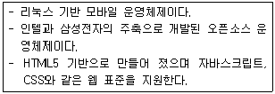
- QNX
- LiMo
- Tizen
- Android
(정답률: 68%)
3. 공개 소프트웨어 라이선스 중 GPL(General Public License)에 대한 특징으로 틀린 것은?
- 프로그램의 소스코드를 용도에 따라 변경할 수 있다.
- 변경된 프로그램 역시 소스코드를 반드시 공개 배포해야 한다.
- 법으로 제한하는 행위를 포함한 어떠한 목적으로든지 사용할 수 있다.
- 변경된 프로그램 역시 똑같은 라이선스인 GPL 라이선스를 적용해야 한다.
(정답률: 76%)
4. 다음에서 설명하는 리눅스의 활용 분야로 알맞은 것은?
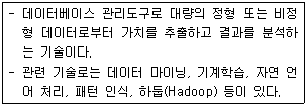
- 빅 데이터
- 사물 인터넷
- 클라우드 컴퓨팅
- 임베디드 시스템
(정답률: 83%)
5. 다음 중 리눅스 배포판의 종류와 설명으로 틀린 것은?
- 수세 : 1994년 독일에서 배포된 상용 소프트웨어로 패키지 관리를 위해 YaST 유틸리티를 제공한다.
- 우분투 : 데비안 리눅스를 기초로 만든 리눅스 배포판으로 고유한 데스크탑 환경인 유니티를 사용한다.
- 레드햇 : 레드햇 리눅스의 약자는 RHEL로 현재까지 무상으로 배포되고 있으며, RPM패키지 방식을 사용한다.
- 데비안 : 패키지의 설치, 삭제 등은 dpkg 명령어로 수행되며, apt를 이용하면 쉬운 설치나 업데이트가 가능하다.
(정답률: 65%)
6. 다음 중 10GB 용량의 하드디스크 4개를 이용해서 RAID-5를 구성했을 경우 실제 사용 가능한 용량으로 알맞은 것은?
- 40GB
- 30GB
- 26.4GB
- 20GB
(정답률: 69%)
7. 다음 중 텍스트 기반의 콘솔(Console) 창에서 로그아웃하는 방법으로 틀린 것은?
- exit 명령을 실행한다.
- logout 명령을 실행한다.
- [Ctrl]+[c] 키를 누른다.
- [Ctrl]+[d] 키를 누른다.
(정답률: 62%)
8. 다음 중 ext4 파일 시스템의 매직 넘버(magic number) 값으로 알맞은 것은?
- 0xEF53
- 0xEF80
- 0xEF81
- 0xEF82
(정답률: 43%)
9. 다음중디스플레이매니저에대한설명으로알맞은것은?
- X 클라이언트와 X 서버간의 통신을 담당한다.
- 런 레벨 5로 부팅 시 로그인 창을 통해 사용자 인증을 수행한다.
- GUI 환경을 이용하기 위해 사용자에게 제공되는 인터페이스 스타일을 지칭한다.
- C 언어로 구현된 클라이언트 프로그램으로 X 서버와 대화를 해주는 역할을 수행한다.
(정답률: 46%)
10. 다음 중 evince 프로그램이 지원하는 문서 포맷으로 틀린 것은?
- PS
- PSD
- XPS
(정답률: 48%)
11. 다음 중 C 셸을 개발한 사람으로 알맞은 것은?
- 켄 톰프슨(Ken Tompson)
- 데니스 리치(Dennis Ritchie)
- 빌 조이(Bill Joy)
- 브라이언 폭스(Brian Fox)
(정답률: 60%)
12. 다음 명령의 결과로 알맞은 것은?
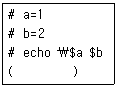
- $a $b
- 1 2
- $a 2
- 1 $b
(정답률: 72%)
13. 다음 중 [Ctrl]+[c] 입력 시에 전송되는 시그널 및 번호의 조합으로 알맞은 것은?
- 2, SIGINT
- 2, SIGQUIT
- 3, SIGINT
- 3, SIGQUIT
(정답률: 51%)
14. 다음 ( 괄호 ) 안에 들어갈 내용으로 알맞은 것은?
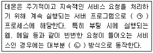
- ㉠ 포어그라운드 ㉡ standalone
- ㉠ 포어그라운드 ㉡ inetd
- ㉠ 백그라운드 ㉡ inetd
- ㉠ 백그라운드 ㉡ standalone
(정답률: 64%)
15. 다음 그림의 도구를 실행하기 위한 명령으로 알맞은 것은?
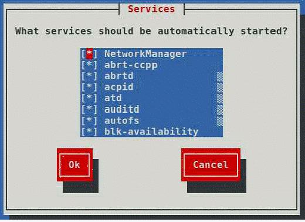
- systemctl
- ntsysv
- chkconfig
- system-config-services
(정답률: 57%)
16. 다음에서 설명하는 OSI 7 계층에 해당하는 프로토콜로 알맞은 것은?
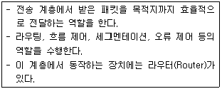
- TCP
- AFP
- FTP
- ARP
(정답률: 54%)
17. 다음 중 ( 괄호 ) 안에 들어갈 내용으로 알맞은 것은?
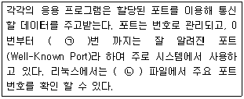
- ㉠ : 128 ㉡ : /etc/protocols
- ㉠ : 1023 ㉡ : /etc/services
- ㉠ : 1024 ㉡ : /etc/protocols
- ㉠ : 65536 ㉡ : /etc/services
(정답률: 58%)
18. 다음과 같은 조건일 때 최대로 사용 가능한 호스트 IP주소 개수로 알맞은 것은?
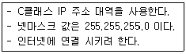
- 252
- 253
- 254
- 256
(정답률: 65%)
19. 네트워크 장애 발생으로 통신 여부를 확인하기 위해 특정 호스트까지 라우팅 되는 과정을 출력해주는 명령어로 알맞은 것은?
- ping
- route
- nslookup
- traceroute
(정답률: 72%)
20. 다음 중 시스템에서 사용하는 네임 서버(DNS 서버)를 설정하는 파일로 알맞은 것은?
- /etc/hosts
- /etc/network
- /etc/resolv.conf
- /etc/sysconfig/network
(정답률: 68%)
2과목: 리눅스 시스템 관리
21. 다음 결과에 해당하는 명령으로 알맞은 것은?
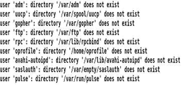
- pwconv
- pwck
- chage
- lslogins
(정답률: 54%)
22. 다음 중 사용자 계정에 부여되는 UID 값을 1000번부터 할당되도록 설정할 때 이용하는 파일로 알맞은 것은?
- /etc/passwd
- /etc/login.defs
- /etc/skel
- /etc/default/useradd
(정답률: 46%)
23. 회사에서 근무 중인 ihduser 사용자가 올해 말로 퇴사한다고 하여 계정만기일을 지정하려고 한다. 다음 중 관련 명령으로 알맞은 것은?
- useradd -e 2017-12-31 ihduser
- useradd -D -e 2017-12-31 ihduser
- usermod -E 2017-12-31 ihduser
- usermod -e 2017-12-31 ihduser
(정답률: 64%)
24. 다음 중 kait라는 그룹의 이름을 ihd로 변경할 때 관련 명령으로 알맞은 것은?
- groupmod -n ihd kait
- groupmod -n kait ihd
- groupmod -l ihd kait
- groupmod -l kait ihd
(정답률: 53%)
25. 다음 결과에 해당하는 명령으로 알맞은 것은?
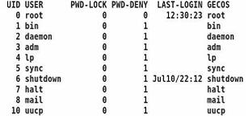
- id
- uid
- lsid
- lslogins
(정답률: 49%)
26. 다음 그림과 같이 기본 허가권이 설정되도록 실행하는 명령으로 알맞은 것은?
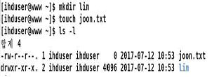
- umask 002
- umask 022
- umask 755
- umask 644
(정답률: 63%)
27. 다음 명령의 결과에 대한 설명으로 틀린 것은?
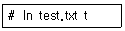
- 두 파일의 아이노드 번호는 동일하다.
- ls -l 명령 실행 시 두 파일 모두 링크의 숫자값이 2로 올라간다.
- 두 파일의 크기가 다르다.
- test.txt 파일을 삭제해도 t 파일의 내용에 영향을 받지 않는다.
(정답률: 54%)
28. 다음 그림의 결과와 관련 있는 명령으로 알맞은 것은?
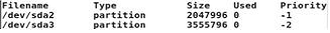
- mkswap -l
- free -s
- swapon -s
- df -s
(정답률: 35%)
29. 다음은 ihduser 사용자의 디스크 사용량을 제한하는 과정이다. ( 괄호 ) 안에 들어갈 내용으로 알맞은 것은?
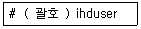
- quota
- edquota
- setquota
- quotaon
(정답률: 48%)
30. 다음 명령의 결과에 대한 설명으로 알맞은 것은?
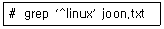
- joon.txt에서 linux라는 문자열이 없는 줄을 출력한다.
- joon.txt에서 단어의 시작이 linux인 줄을 출력한다.
- joon.txt에서 줄의 시작이 linux인 줄을 출력한다.
- joon.txt에서 linux라는 단어가 있는 줄을 출력한다.
(정답률: 46%)
31. 다음 설명에 해당하는 crontab 설정으로 알맞은 것은?
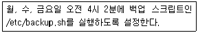
- 4 2 * * 1,3,5 /etc/backup.sh
- 2 4 * * 1,3,5 /etc/backup.sh
- 4 2 1,3,5 * * /etc/backup.sh
- 2 4 1,3,5 * * /etc/backup.sh
(정답률: 70%)
32. 다음 중 프로세스 우선순위인 NI의 설정값 범위로 알맞은 것은?
- -20 ~ 19
- -19 ~ 20
- -20 ~ 20
- -19 ~ 19
(정답률: 63%)
33. 다음은 ihduser 사용자의프로세스를 모두강제종료하는 과정이다. ( 괄호 ) 안에 들어갈 명령으로 알맞은 것은?
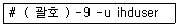
- kill
- killall
- pgrep
- signal
(정답률: 56%)
34. 다음 ( 괄호 ) 안에 들어갈 명령으로 알맞은 것은?
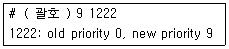
- nice
- renice
- kill -s
- pkill -s
(정답률: 54%)
35. 다음 중백그라운드로 수행중인 작업번호2번프로세스를 포어그라운드 프로세스로 전환할 때 사용하는 명령으로 알맞은 것은?
- bg 2
- bg %2
- fg -2
- fg %2
(정답률: 72%)
36. 다음은 yum 명령을 이용해서 mail이라는 문자열이 들어있는 패키지를 찾는 과정이다. ( 괄호 ) 안에 들어갈 내용으로 알맞은 것은?
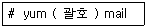
- search
- research
- find
- seek
(정답률: 71%)
37. 다음 ( 괄호 ) 안에 들어갈 내용으로 알맞은 것은?
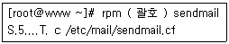
- -qc
- -qv
- -V
- -qs
(정답률: 57%)
38. 시스템에 rpm으로 설치된 httpd 패키지를 제거하기 위해 명령을 실행하였으나 다음 그림과 같이 메시지가 나타나면서 실패하였다. 해당 메시지를 무시하고 제거하려고 할 때 ( 괄호 ) 안에 들어갈 내용으로 알맞은 것은?
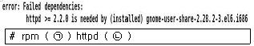
- ㉠ -r ㉡ --force
- ㉠ -d ㉡ --force
- ㉠ -e ㉡ --nodeps
- ㉠ -f ㉡ --nodeps
(정답률: 57%)
39. MySQL를 설치하기 위해 보기와 같은 소스 코드(Source Code)를 다운로드하여 압축을 푼 뒤에 관련 디렉터리로 이동한 상태이다. 다음 중 그 이후의 진행 순서를 간략히 나타낸 것으로 알맞은 것은?
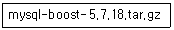
- configure, make, make install 순서로 실행하여 설치한다.
- cmake, make install 순서로 실행하여 설치한다.
- rpm -i 명령을 실행해서 설치한다.
- rpm -U 명령을 실행해서 설치한다.
(정답률: 47%)
40. 다음은 APM를 설치를 위해 소스 코드를 다운로드하여 압축을 푸는 과정의 일부이다. ( 괄호 ) 안에 들어갈 내용으로 알맞은 것은?
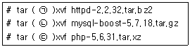
- ㉠ j ㉡ J ㉢ z
- ㉠ J ㉡ j ㉢ z
- ㉠ j ㉡ z ㉢ J
- ㉠ J ㉡ z ㉢ j
(정답률: 62%)
41. 다음 중 커널 컴파일을 위해 소스 파일을 다운로드하는 디렉터리로 가장 알맞은 것은?
- /usr/local/src
- /usr/local/kernels
- /usr/src/kernels
- /sys/kernel
(정답률: 52%)
42. 커널 컴파일 과정에서 설정된 작업을 초기화하려고 한다. 다음 중 가장 강력하게 제거하는 명령으로 알맞은 것은?
- make clean
- make clean all
- make mrproper
- make distclean
(정답률: 47%)
43. 다음 중 커널 컴파일 옵션 설정 시 X 윈도 환경의 Qt 기반 설정 도구를 사용하는 명령으로 알맞은 것은?
- make menuconfig
- make qconfig
- make xconfig
- make nconfig
(정답률: 49%)
44. 다음 ( 괄호 ) 안에 들어갈 내용으로 알맞은 것은?
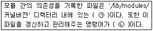
- ㉠ moprobe.conf ㉡ modprobe
- ㉠ modprobe.conf ㉡ depmod
- ㉠ modules.dep ㉡ modprobe
- ㉠ modules.dep ㉡ depmod
(정답률: 47%)
45. 다음 그림과 같은 결과를 보기 위해 ( 괄호 ) 안에 들어갈 명령으로 알맞은 것은?
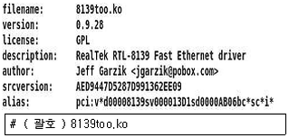
- lsmod
- modprobe -l
- inmod
- modinfo
(정답률: 51%)
46. 다음 중 fdisk를 이용해서 기존의 Linux 파티션으로 이용되던 영역을 Swap 영역으로 변경할 때 설정하는 ID값으로 알맞은 것은?
- 82
- 83
- 8e
- fd
(정답률: 48%)
47. 다음 중 /etc/fstab 파일을 2매 출력하려고 할 때 ( 괄호 ) 안에 들어갈 옵션으로 알맞은 것은?
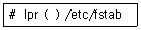
- -2
- -c 2
- -n 2
- -# 2
(정답률: 53%)
48. 다음 중 전통적으로 Sys V 계열 유닉스에서 사용했던 프린터 관련 명령어로 틀린 것은?
- lp
- lpr
- lpstat
- cancel
(정답률: 52%)
49. 다음 중 디스크의 파티션을 분할할 때 사용하는 명령으로 알맞은 것은?
- parted
- partprobe
- findfs
- partfs
(정답률: 41%)
50. 다음 중 주변 장치와 관련 프로그램의 조합으로 틀린 것은?
- CUPS - 프린터
- OSS - 스캐너
- LPRng - 프린터
- ALSA - 사운드카드
(정답률: 63%)
51. 다음에 제시된 조건으로 rsyslog.conf에 설정하려고 할 때 알맞은 것은?
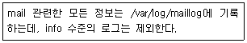
- mail.*;info.!=mail /var/log/maillog
- mail.*;mail.!=info /var/log/maillog
- mail.*;mail.info /var/log/maillog
- mail.*;info.none /var/log/maillog
(정답률: 53%)
52. 다음에 제시된 조건과 같이 로그 파일을 로테이션하려고 할 때 /etc/logrotate.conf에 설정하는 값으로 알맞은 것은?
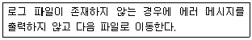
- missingok
- nomissingok
- passok
- nopassok
(정답률: 46%)
53. 다음 중 최근 3일 이내에 마지막 로그인한 사용자 정보를 출력하는 명령으로 알맞은 것은?
- lastlog 3
- lastlog -3
- lastlog -d 3
- lastlog -t 3
(정답률: 33%)
54. 다음 중 특별한 명령어를 이용하지 않고, cat 명령으로 확인 가능한 로그 파일로 알맞은 것은?
- /var/log/secure
- /var/log/lastlog
- /var/log/wtmp
- /var/log/btmp
(정답률: 58%)
55. 다음 중 단순한 패스워드를 사용하는 계정을 찾아낼 때 사용하는 보안 도구로 가장 알맞은 것은?
- tcpdump
- nmap
- wireshark
- John the Ripper
(정답률: 63%)
56. 다음 중 grub 셸 프롬프트에서 암호화된 패스워드를 설정하기 위해 사용하는 명령으로 알맞은 것은?
- md5
- md5sum
- md5crypt
- crypt
(정답률: 46%)
57. 다음 중 비활성화된 SELinux를 활성화시킬 때 사용하는 명령으로 알맞은 것은?
- setenforce 0
- setenforce 1
- setenforce on
- setenforce start
(정답률: 57%)
58. 다음 중 리눅스에서 백업 대상이 되는 디렉터리로 가장 알맞은 것은?
- /tmp
- /sys
- /var
- /lib
(정답률: 50%)
59. 다음 중 dump로 백업된 파일에서 일부만 복원하려고 할 때 ( 괄호 ) 안에 들어갈 내용으로 알맞은 것은?
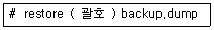
- -if
- -of
- -af
- -rf
(정답률: 35%)
60. 다음은 rsync 명령을 이용해서 특정 디렉터리를 백업하는 과정이다. ( 괄호 ) 안에 들어갈 내용으로 알맞은 것은?
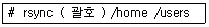
- -iv
- -ov
- -av
- -uv
(정답률: 46%)
3과목: 네트워크 및 서비스의 활용
61. 다음에서 설명하는 웹 서버 프로그램으로 알맞은 것은?
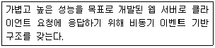
- Nginx
- Docker
- IIS
- Apache httpd
(정답률: 46%)
62. 다음 중 'Not Found'에 해당하는 HTTP 상태코드로 알맞은 것은?
- 401
- 402
- 403
- 404
(정답률: 72%)
63. 다음 중 아파치 웹 서버 프로그램을 소스로 설치할 때 설치되는 디렉터리를 지정하는 옵션으로 알맞은 것은?
- --prefix
- --enable-root
- --server-root
- --document-root
(정답률: 49%)
64. 다음 중 하나의 IP 주소에 여러 도메인을 사용하는 경우에 설정하는 아파치 웹 서버 환경 설정 파일로 알맞은 것은?
- httpd-userdir.conf
- httpd-info.conf
- httpd-vhosts.conf
- httpd-mpm.conf
(정답률: 63%)
65. 다음 중 apachectl을 이용해서 기존의 연결된 접속을 해제하지 않고 아파치 웹 서버를 재시작할 때 사용하는 명령으로 알맞은 것은?
- restart
- reload
- status
- graceful
(정답률: 43%)
66. 다음 중 LDAP 관련된 설명으로 틀린 것은?
- IP 프로토콜을 기반으로 사용자, 시스템, 네트워크 서비스 정보 등의 디렉터리 정보를 공유할 수 있다.
- 디렉터리는 논리, 계급 등을 기준으로 조직화 되어 있다.
- 일반적으로 RDBMS에 비해 검색 속도가 빨라서 쓰기 위주의 서비스에 좋은 성능을 발휘한다.
- 이름, 주소와 같이 하나 이상의 속성을 가진 객체로 구성된다.
(정답률: 58%)
67. 다음 ( 괄호 ) 안에 들어갈 내용으로 알맞은 것은?
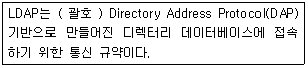
- X.25
- X.232
- X.500
- X.802
(정답률: 49%)
68. 다음 설명에 해당하는 내용으로 알맞은 것은?
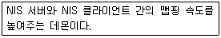
- ypbind
- yppasswd
- ypserv
- ypxfrd
(정답률: 43%)
69. 다음 설명에 해당하는 NIS 관련 명령으로 알맞은 것은?
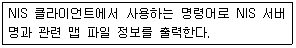
- ypbind
- ypcat
- ypchsh
- ypwhich
(정답률: 42%)
70. 다음 중 NIS를 이용한 사용자 인증이 가능한 서비스 조합으로 알맞은 것은?
- ssh, dns
- samba, dns
- telnet, dns
- ssh, samba
(정답률: 56%)
71. 다음 중 smb.conf 파일에서 ihd 그룹에 속한 사용자들이 파일 생성 및 삭제가 가능하도록 지정하는 항목으로 알맞은 것은?
- writable = ihd
- writable = @ihd
- write list = ihd
- write list = @ihd
(정답률: 32%)
72. 다음 그림에 해당하는 삼바관련 명령으로 알맞은 것은?
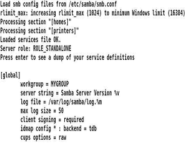
- testparm
- smbstatus
- pdbedit
- smbcontrol
(정답률: 42%)
73. 다음 중 /etc/exports 파일에 설정하는 root_squash에 대한 설명으로 알맞은 것은?
- root를 포함하여 모든 사용자의 권한을 nfsnobody로 매핑시킨다.
- root를 제외한 일반 사용자의 권한을 nfsnobody로 매핑시킨다.
- 일반 사용자의 권한을 인정하고, root만 nfsnobody로 매핑시킨다.
- 일반 사용자의 접근은 불허하고, root만 nfsnbody로 매핑시킨다.
(정답률: 47%)
74. 다음 그림에 해당하는 명령으로 알맞은 것은?
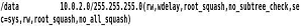
- nfsstat -v
- exportfs -v
- showmount -e
- rpcinfo -p
(정답률: 37%)
75. vsftpd.conf 파일에서 익명 계정의 사용을 허가하려고 할 때 ( 괄호 ) 안에 들어갈 내용을 알맞은 것은?
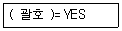
- anonymous
- anonymous_enable
- ftp
- ftp_enable
(정답률: 61%)
76. 다음 중 메일 서버 역할(MTA)을 수행하는 프로그램으로 알맞은 것은?
- postfix
- procmail
- dovecot
- evolution
(정답률: 48%)
77. 다음 설명에 해당하는 프로그램으로 알맞은 것은?
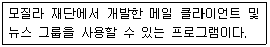
- kmail
- thunderbird
- mutt
- evolution
(정답률: 54%)
78. 다음 중 sendmail.cf 파일 설정에서 특정 도메인(ihd.or.kr)을 강제로 지정하려고 할 때 관련 항목으로 알맞은 것은?
- Fwihd.or.kr
- Djihd.or.kr
- FR-o ihd.or.kr
- Dnihd.or.kr
(정답률: 58%)
79. 다음 중 /etc/aliases 파일 변경 후에 실행하는 명령으로 알맞은 것은?(오류 신고가 접수된 문제입니다. 반드시 정답과 해설을 확인하시기 바랍니다.)
- mailq
- makemap hash /etc/aliases < /etc/aliases
- sendmail -bi
- sendmail -bp
(정답률: 42%)
80. 다음 ( 괄호 ) 안에 들어갈 내용으로 알맞은 것은?
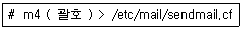
- /etc/mail/sendmail.m4
- /etc/mail/sendmail.db
- /etc/mail/sendmail.mc
- /etc/mail/sendmail.cf
(정답률: 53%)
81. 다음 중 /etc/named.conf 파일에서 사용하는 주석으로 틀린 것은?
- ;를 행 앞에 지정한다.
- #를 행 앞에 지정한다.
- //를 행 앞에 지정한다.
- 여러 행인 경우에 /* ~ */ 안에 지정한다.
(정답률: 61%)
82. 다음은 /etc/named.conf 파일의 일부이다. ( 괄호 ) 안에 들어갈 내용으로 알맞은 것은?
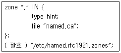
- include
- includedir
- zone
- options
(정답률: 56%)
83. 다음 중 DNS 서버에서의 zone 파일에서 PTR 타입을 선언하는 이유로 가장 알맞은 것은?
- 도메인에 대한 질의 시 IP 주소가 조회되도록 설정한다.
- IP 주소에 대한 질의 시 도메인 주소가 조회되도록 설정한다.
- 도메인에 대한 일종의 별칭을 지정할 때 사용한다.
- IP 주소에 대한 일종의 별칭을 지정할 때 사용한다.
(정답률: 52%)
84. 다음 조건과 같은 경우에 설정된 zone 파일의 문법적 오류를 점검하는 명령으로 알맞은 것은?
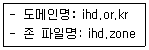
- named-checkconf ihd.or.kr ihd.zone
- named-checkconf ihd.zone ihd.or.kr
- named-checkzone ihd.or.kr ihd.zone
- named-checkzone ihd.zone ihd.or.kr
(정답률: 42%)
85. 다음은 /etc/named.conf 파일의 일부이다. 특정 클라이언트들을 하나의 별칭으로 묶으려고 할 때 ( 괄호 ) 안에 들어갈 내용으로 알맞은 것은?
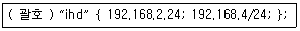
- acl
- alias
- group
- member
(정답률: 40%)
86. 다음 중 버추얼박스를 이용해서 가상 머신을 생성한 후에 CentOS69라는 이름으로 리눅스를 설치했을 때 생성되는 파일명으로 가장 알맞은 것은?
- CentOS69.vbox
- CentOS69.vmx
- CentOS69.vdi
- CentOS69.vmdk
(정답률: 43%)
87. 다음 중 KVM이 반가상화를 지원하지 않는 하드웨어로 알맞은 것은?
- CPU
- Ethernet Card
- Disk I/O
- Graphic Card
(정답률: 53%)
88. 다음 중 리눅스 가상화 기술인 XEN에 대한 설명으로 틀린 것은?
- CPU 반가상화 지원으로 다른 기술과 비교해서 물리적 서버 대비 효율성이 가장 좋다.
- 반가상화 구성 시에 호스트와 다른 아키텍처의 게스트는 실행할 수 없다.
- 전가상화 구성 시에는 QEMU 기반으로 동작한다.
- 상용화된 제품으로는 RHEV가 있다.
(정답률: 36%)
89. 다음 중 XEN, KVM과 같은 다양한 하이퍼바이저를 통합 관리하기 위한 플랫폼으로 틀린 것은?
- Cloudstack
- Docker
- Openstack
- OpenNebula
(정답률: 49%)
90. 다음 설명에 해당하는 명령으로 알맞은 것은?
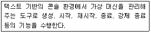
- virsh
- libvirt
- libvirtd
- virt-manager
(정답률: 44%)
91. xinetd.conf 파일에 다음과 같이 설정되어 있을 때 관련 설명으로 알맞은 것은?
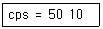
- xinetd에서 생성하는 데몬의 최대 개수를 50개로 제한하고, 초과할 경우 10초 동안 관련 서비스를 중지한다.
- xinetd에서 생성하는 데몬의 최대 개수를 10개로 제한하고, 초과할 경우 50초 동안 관련 서비스를 중지한다.
- 초당 요청 수가 50개 이상일 경우에 10초 동안 접속 연결을 중단한다.
- 초당 요청 수가 10개 이상일 경우에 50초 동안 접속 연결을 중단한다.
(정답률: 57%)
92. 다음은 squid.conf 파일의 일부이다. ( 괄호 ) 안에 들어갈 내용으로 알맞은 것은?
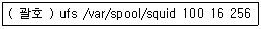
- squid_dir
- cache_dir
- dump_dir
- access_dir
(정답률: 35%)
93. 다음 중 dhcpd.conf 파일에서 할당되는 IP 주소의 범위를 지정하는 항목으로 알맞은 것은?
- fixed-address
- default-address
- range
- dynamic-address
(정답률: 61%)
94. 다음 ( 괄호 ) 안에 들어갈 내용으로 알맞은 것은?
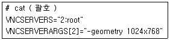
- /etc/vncservers
- /etc/sysconfig/vncservers
- /etc/vncservers.conf
- /etc/vncconfig
(정답률: 42%)
95. 다음 그림에 해당하는 명령으로 알맞은 것은?
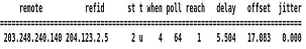
- ntp -q
- ntpq -p
- ntpd -p
- ntpdate -p
(정답률: 37%)
96. 다음 중 메모리 누수(Memory Leak)와 가장 관련 있는 C언어 함수로 알맞은 것은?
- write()
- fread()
- malloc()
- fork()
(정답률: 59%)
97. 다음 설명에 해당하는 DDOS 도구로 알맞은 것은?
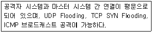
- Stacheldraht
- TFN
- TFN 2K
- Trinoo
(정답률: 41%)
98. 다음 중 터널링(Tunneling) 기법을 사용해 공중망에 접속해 있는 두 네트워크 사이의 연결을 마치 전용회선을 이용해 연결한 것과 같은 효과를 내는 가상 네트워크 보안기술로 알맞은 것은?
- VPN
- IDS
- IPS
- ESM
(정답률: 69%)
99. 다음 중 iptables의 nat 테이블에서 사용 가능한 사슬(Chain)로 틀린 것은?(오류 신고가 접수된 문제입니다. 반드시 정답과 해설을 확인하시기 바랍니다.)
- INPUT
- OUTPUT
- PREROUTING
- POSTROUTING
(정답률: 25%)
100. 다음 중 현재 설정되어 있는 iptables 정책을 파일로 저장하는 명령으로 알맞은 것은?
- iptables-save firewall.sh
- iptables-save -s firewall.sh
- iptables-save > firewall.sh
- iptables-save < firewall.sh
(정답률: 54%)